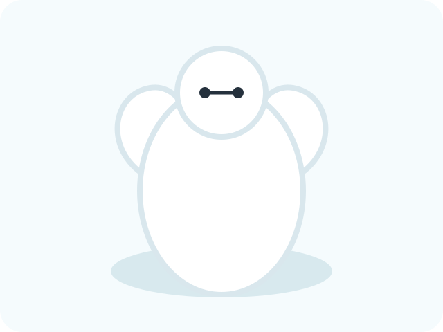
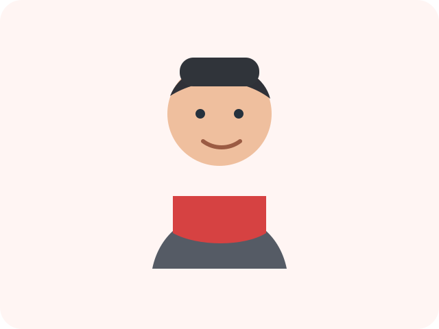
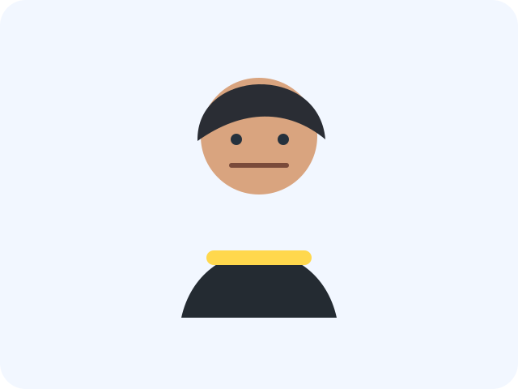
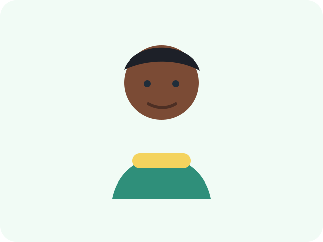
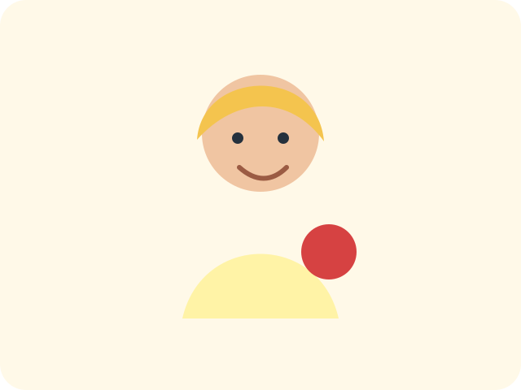

ベイマックス

人の心と体をケアするためにつくられたロボットです。 やわらかな姿とまっすぐな言葉で、ヒロを支えます。
「もう大丈夫だよ。」
心と体を守るケアロボット、ベイマックス。 ヒロと仲間たちが見せるやさしさ、勇気、チームワークをまとめました。
ベイマックスは、人を傷つけるためではなく、守るためにつくられたケアロボットです。 ヒロの悲しみに寄り添いながら、仲間たちと一緒に大切なものを守るために行動します。

人の心と体をケアするためにつくられたロボットです。 やわらかな姿とまっすぐな言葉で、ヒロを支えます。
ロボット工学の才能を持つ少年です。 ベイマックスや仲間たちとの出会いを通して、大きく成長していきます。

ヒロの兄で、ベイマックスをつくった青年です。 人を助けたいという思いが、物語の中心に残り続けます。

クールで行動力のある仲間です。 スピード感のある判断で、チームを前へ進めます。

几帳面で慎重な性格の仲間です。 細かな確認を大切にしながら、チームの安全を支えます。

明るく前向きな科学者タイプの仲間です。 化学の知識とやさしい雰囲気で、チームを元気にします。